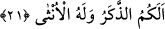
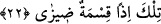
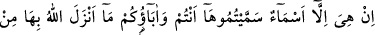
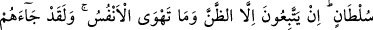
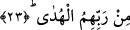
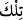

21. Demek erkek size, dişi O’na öyle mi?
Bu âyet ilk azarlama üzerine binâ edilmiş, ikinci bir azarlamadır. Acaba sizin erkek,
Allah’ın kız çocukları mı vardır?
22. O zaman bu insafsızca bir taksim!
“/Tilke/bu” kelimesi önceki istifham cümlesinden anlaşılan bir taksîme işâret
etmek için getirilmiştir. Böyle olduğu vakit “O zaman bu insafsızca bir taksim!” Yâni
Allah Teâlâ’nın yapmış olduğu taksimi beğenmediğiniz için bunun zâlimâne ve eğrilip
bükülmüş bir taksim olduğunu söylemiş olursunuz.
Bu âyette müşriklerin şirk koştukları şeyin çirkin görüldüğüne ve onların zâhirî
şeylerin bir kısmını bırakıp diğer kısmı ile şirk koşmalarının iğrenç bir durum olduğuna
işâret edilmektedir. Yâni: “Allah, nefislerinizin üzerindeki zulmânî te’sirlerle ölü hâline
koyduğunuz ruh erkeğini; ibâdet edip isteklerine tâbi olduğunuz, emirlerine ve
nehiylerine inkıyad ettiğiniz nefs dişisini eşit kılarak zulümle hareket eden böyle
zâlimlerin taksiminden Allah berîdir. Bilâkis onların yapığı bu taksim, âdil birinin
yaptığı adâlet ölçüsünde değil, zulümle hareket eden bir zâlimin taksimidir.
23. Bunlar (putlar), sizin ve atalarınızın taktığı isimlerden başka bir şey değildir.
Allah onlar hakkında hiçbir delil indirmemiştir. Onlar ancak zanna ve nefislerinin
arzusuna uyuyorlar. Halbuki kendilerine Rableri tarafından yol gösterici gelmiştir.
“Bunlar (putlar), sizin ve atalarınızın taktığı isimlerden başka bir şey değildir.”
Yâni putlar sizin kendilerine ilâh ismi verip çağırmanızla ulûhiyyet kazanamazlar.
Onların isimleri, müsemmâsı altında hiç bir şey olmayan kuru isimlerdir. Yâni onlara
âid olan bu isimler hiç bir şekil ve kat’î surette ulûhiyyet mânâsı veremezler. Şânı
büyük ve şöhreti ile meşhur bir kimseye hakaret için onu sıfatıyla değil de ismiyle
çağırman bu nev’idendir.
Molla Câmî şöyle demiştir: